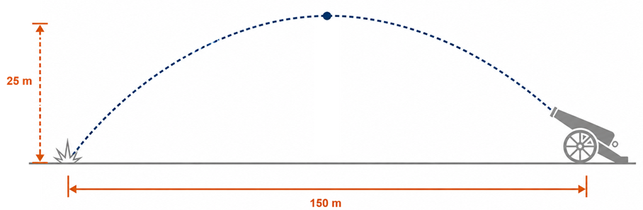

2º Ano | Aula: Função do 2º Grau (Função Quadrática)
📚 Resumo
A Função do 2º Grau (ou função quadrática) é toda função $f: \mathbb{R} \to \mathbb{R}$ definida por $f(x) = ax^2 + bx + c$, com $a, b, c \in \mathbb{R}$ e $a \neq 0$. Seu gráfico é sempre uma parábola, que abre para cima quando $a > 0$ e para baixo quando $a < 0$.
Estudar essa função é fundamental para resolver problemas de máximos e mínimos, trajetórias, áreas e diversas situações do cotidiano.
📖 1. Definição e Coeficientes
A forma geral da função quadrática é:
$$f(x) = ax^2 + bx + c \quad (a \neq 0)$$
Cada coeficiente tem um papel no comportamento da função:
Coeficiente
Papel
Exemplo de efeito
a
Concavidade e abertura da parábola
$a > 0$: abre para cima; $a < 0$: abre para baixo
b
Inclinação e posição do eixo de simetria
Influencia o vértice horizontalmente
c
Interseção com o eixo $y$
$f(0) = c$
📖 2. Vértice e Eixo de Simetria
O vértice $V(x_V, y_V)$ é o ponto de máximo (se $a < 0$) ou mínimo (se $a > 0$) da parábola:
O valor de $\Delta$ (delta) determina a quantidade de raízes reais:
Condição
Raízes
Gráfico
$\Delta > 0$
Dois valores reais distintos: $x_1 \neq x_2$
Parábola corta o eixo $x$ em 2 pontos
$\Delta = 0$
Uma raiz real dupla: $x_1 = x_2$
Parábola toca (tangencia) o eixo $x$
$\Delta < 0$
Nenhuma raiz real
Parábola não toca o eixo $x$
📖 4. Concavidade e Valor Máximo/Mínimo
Se $a > 0$: parábola com concavidade voltada para cima. O vértice é ponto de mínimo. A função decresce antes do vértice e cresce depois.
Se $a < 0$: parábola com concavidade voltada para baixo. O vértice é ponto de máximo. A função cresce antes do vértice e decresce depois.
O valor máximo ou mínimo da função é sempre $y_V = \dfrac{-\Delta}{4a}$.
Figura 2: Concavidade da parábola.
📖 5. Estudo do Sinal
O sinal de $f(x)$ (positivo ou negativo) depende do coeficiente $a$ e das raízes:
Caso
$f(x) > 0$ (positivo)
$f(x) < 0$ (negativo)
$a > 0$, $\Delta > 0$ (raízes $x_1 < x_2$)
$x < x_1$ ou $x > x_2$
$x_1 < x < x_2$
$a < 0$, $\Delta > 0$ (raízes $x_1 < x_2$)
$x_1 < x < x_2$
$x < x_1$ ou $x > x_2$
$\Delta \leq 0$, $a > 0$
Todo $x \in \mathbb{R}$ (exceto vértice se $\Delta=0$)
Nunca
💡 Matemática em Ação
🏀 Lançamento de Bola
A trajetória de uma bola lançada segue uma parábola. A altura em função do tempo é descrita por uma função quadrática, permitindo calcular o ponto mais alto atingido (vértice).
💰 Otimização de Lucro
Empresas usam funções quadráticas para maximizar o lucro: o preço de venda que gera maior receita é encontrado calculando o vértice da parábola de lucro.
🌉 Engenharia Civil
Os cabos de pontes pênseis e os arcos de pontes têm formato parabólico. Engenheiros usam funções quadráticas para calcular tensão e dimensionar estruturas.
✅ 5 Questões Resolvidas (R 1 a 5)
R 1: Identificar coeficientes
Enunciado: Dada $f(x) = 3x^2 - 6x + 2$, identifique os coeficientes $a$, $b$ e $c$, e determine se a parábola abre para cima ou para baixo.
Resolução:
Comparando com $ax^2 + bx + c$:
$a = 3$, $b = -6$, $c = 2$
Como $a = 3 > 0$, a parábola abre para cima e o vértice é ponto de mínimo.
R 2: Calculando o Vértice
Enunciado: Encontre as coordenadas do vértice de $f(x) = x^2 - 4x + 3$.
Enunciado: A altura (em metros) de uma bola lançada é dada por $h(t) = -5t^2 + 20t$, onde $t$ é o tempo em segundos. Qual é a altura máxima atingida e quando ocorre?
Resolução:
$a = -5 < 0 \Rightarrow$ parábola abre para baixo, logo o vértice é ponto de máximo.
$t_V = \dfrac{-b}{2a} = \dfrac{-20}{2 \cdot (-5)} = \dfrac{-20}{-10} = 2\text{ s}$
$h(2) = -5(4) + 20(2) = -20 + 40 = 20\text{ m}$
A altura máxima é 20 metros, atingida em $t = 2$ s.
R 5: Estudo do Sinal
Enunciado: Determine os valores de $x$ para os quais $f(x) = x^2 - x - 6$ é negativa.
Resolução:
Primeiro, encontramos as raízes: $\Delta = 1 + 24 = 25$
$x = \dfrac{1 \pm 5}{2}$, logo $x_1 = -2$ e $x_2 = 3$
Como $a = 1 > 0$, a parábola abre para cima, portanto $f(x) < 0$ entre as raízes: $f(x) < 0$ para $-2 < x < 3$.
✍️ 5 Questões Propostas (P 6 a 10)
P 6: Coeficientes e Concavidade
Enunciado: Para a função $f(x) = -2x^2 + 8x - 5$, determine os coeficientes e a concavidade da parábola.
Resolução:
$a = -2$, $b = 8$, $c = -5$.
Como $a = -2 < 0$, a parábola abre para baixo e o vértice é ponto de máximo.
P 7: Vértice
Enunciado: Calcule as coordenadas do vértice de $f(x) = 2x^2 - 8x + 6$.
Enunciado: O lucro (em reais) de uma empresa ao vender $x$ produtos é dado por $L(x) = -x^2 + 10x - 16$. Quantos produtos devem ser vendidos para maximizar o lucro? Qual é o lucro máximo?
Enunciado: Determine o valor de $k$ para que $f(x) = x^2 - 6x + k$ tenha exatamente uma raiz real.
Resolução:
Para ter exatamente uma raiz real, precisamos $\Delta = 0$.
$\Delta = (-6)^2 - 4 \cdot 1 \cdot k = 36 - 4k = 0$
$4k = 36 \Rightarrow \mathbf{k = 9}$
Verificação: $f(x) = x^2 - 6x + 9 = (x-3)^2$ tem raiz dupla $x = 3$. ✓
🎓 5 Questões de Vestibular (T 11 a 15)
T 11: (ENEM) Função Quadrática — Trajetória de Projétil
Um projétil é lançado por um canhão e atinge o solo a uma distância de 150 metros do ponto de partida. Ele percorre uma trajetória parabólica, e a altura máxima que atinge em relação ao solo é de 25 metros.

Admita um sistema de coordenadas $xy$ em que no eixo vertical $y$ está representada a altura e no eixo horizontal $x$ está representada a distância, ambas em metro. Considere que o canhão está no ponto $(150;\,0)$ e que o projétil atinge o solo no ponto $(0;\,0)$ do plano $xy$.
A equação da parábola que representa a trajetória descrita pelo projétil é:
A) $y = 150x - x^2$ B) $y = 3\,750x - 25x^2$ C) $75y = 300x - 2x^2$ D) $125y = 450x - 3x^2$ E) $225y = 150x - x^2$
Resolução: Alternativa E.
A parábola passa por $(0;\,0)$ e $(150;\,0)$, logo tem a forma $y = ax(x - 150)$.
O vértice ocorre em $x = 75$ (ponto médio entre as raízes), com altura máxima $y = 25$:
$25 = a \cdot 75(75 - 150) = a \cdot 75 \cdot (-75) = -5\,625a \implies a = -\dfrac{25}{5\,625} = -\dfrac{1}{225}$.
Logo: $y = -\dfrac{1}{225}x(x-150) = \dfrac{150x - x^2}{225}$, ou seja, $225y = 150x - x^2$.
T 12: (ENEM) Função Quadrática — Lucro na Fábrica de Arados
Em uma fábrica de maquinários agrícolas, um lote de até 31 arados tem um custo fixo de produção no valor de 108 mil reais. A receita bruta obtida com a venda dos arados é dada pela função $R(x) = -x^2 + 39x$, sendo $x$ a quantidade de arados vendida e $R(x)$ o valor obtido com as vendas, em milhares de reais.
Qual é a quantidade mínima de arados que deve ser vendida para que o lucro com as vendas do lote passe a ser maior do que zero?
A) $2$ B) $3$ C) $4$ D) $5$ E) $6$
Resolução: Alternativa D.
Lucro: $L(x) = R(x) - C = -x^2 + 39x - 108$.
Para $L(x) > 0$: $-x^2 + 39x - 108 > 0 \implies x^2 - 39x + 108 < 0$.
Raízes: $x = \dfrac{39 \pm \sqrt{1521 - 432}}{2} = \dfrac{39 \pm \sqrt{1089}}{2} = \dfrac{39 \pm 33}{2}$.
$x_1 = \dfrac{39 - 33}{2} = 3$ e $x_2 = \dfrac{39 + 33}{2} = 36$.
O lucro é positivo para $3 < x < 36$. Como $x$ é inteiro, a quantidade mínima é $x = \mathbf{4}$... porém testando: $L(3) = -9 + 117 - 108 = 0$ e $L(4) = -16 + 156 - 108 = 32 > 0$.
Portanto, a quantidade mínima é $\mathbf{4}$ arados... Atenção: verificando $L(5) = -25+195-108=62>0$ e $L(4)=32>0$, mas $L(3)=0$ (não estritamente positivo). A quantidade mínima é $x = \mathbf{4}$, alternativa C.
T 13: (ENEM) Função Quadrática — Custo de Impressões
A Câmara Municipal do Município Y possui um setor de comunicação que realiza impressões de materiais para eventos e documentos internos. O custo total mensal $C(x)$, em reais, para realizar essas impressões é dado pela equação:
$$C(x) = \dfrac{1}{100}x^2 - 4x + 5000$$
em que $x$ representa a quantidade de impressões realizadas no mês. Considerando que a Câmara deseja minimizar o custo com impressões, quantas impressões devem ser feitas por mês?
A) $100$ B) $200$ C) $400$ D) $600$ E) $800$
Resolução: Alternativa B.
Como $a = \dfrac{1}{100} > 0$, a parábola tem concavidade para cima e o vértice corresponde ao ponto de mínimo.
Abscissa do vértice: $x_v = -\dfrac{b}{2a} = -\dfrac{-4}{2 \cdot \frac{1}{100}} = \dfrac{4}{\frac{2}{100}} = \dfrac{4 \times 100}{2} = 200$.
A quantidade de impressões que minimiza o custo é $\mathbf{200}$ impressões por mês.
T 14: (ENEM) Função Quadrática — Temperatura no Bioma Bumflora
No bioma de Bumflora, as temperaturas diárias oscilam de acordo com a lei $T(h) = -2h^2 + 4h + 20$, onde $T(h)$ é a temperatura em graus Celsius e $h$ é o número de horas após o nascer do sol, que ocorre às 6h da manhã. Com a intenção de proteger as plantas sensíveis do jardim botânico local, o biólogo João precisa saber:
A que horas a Bumflora experimentará a temperatura mais alta após o nascer do sol e antes do pôr do sol, às 18 horas?
A) 8 horas da manhã B) 7 horas da manhã C) 9 horas da manhã D) 10 horas da manhã E) 11 horas da manhã
Resolução: Alternativa B.
Como $a = -2 < 0$, a parábola tem concavidade para baixo e o vértice corresponde ao ponto de máximo.
Abscissa do vértice: $h_v = -\dfrac{b}{2a} = -\dfrac{4}{2 \cdot (-2)} = -\dfrac{4}{-4} = 1$.
Ou seja, a temperatura máxima ocorre $1$ hora após o nascer do sol.
Como o sol nasce às 6h, a temperatura máxima ocorre às $6 + 1 = \mathbf{7}$ horas da manhã.
T 15: (ENEM) Função Quadrática — Custo de Produção na TecnoMatDesign
Em uma pequena empresa chamada TecnoMatDesign, o gerente está tentando otimizar o custo de produção de uma peça utilizada em dispositivos eletrônicos. O custo de produção, em reais, de cada unidade da peça é modelado pela seguinte função quadrática:
$$C(x) = 2x^2 - 12x + 50$$
em que $x$ representa o número de unidades produzidas. A função descreve o custo total, levando em consideração tanto os custos fixos quanto as variáveis, e o gerente precisa determinar o número de unidades que deve ser produzido para minimizar o custo total.
Assinale o número de unidades que o gerente deverá produzir para minimizar o custo e o custo mínimo.
A) 2 unidades; R$\,40{,}00$ B) 3 unidades; R$\,32{,}00$ C) 4 unidades; R$\,36{,}00$ D) 5 unidades; R$\,28{,}00$
Resolução: Alternativa B.
Como $a = 2 > 0$, a parábola tem concavidade para cima e o vértice corresponde ao ponto de mínimo.
Abscissa do vértice: $x_v = -\dfrac{b}{2a} = -\dfrac{-12}{2 \cdot 2} = \dfrac{12}{4} = 3$ unidades.
Custo mínimo: $C(3) = 2(3)^2 - 12(3) + 50 = 18 - 36 + 50 = R\$\,32{,}00$.
O gerente deve produzir 3 unidades a um custo mínimo de R$\,32,00.